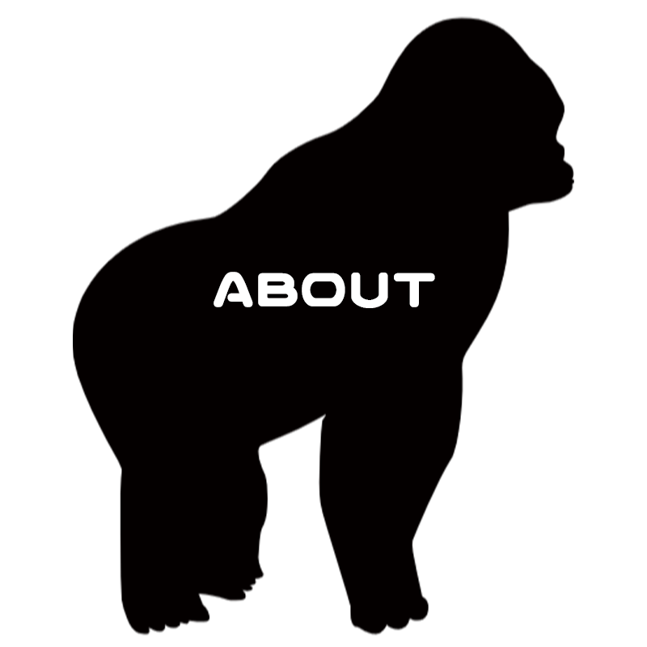
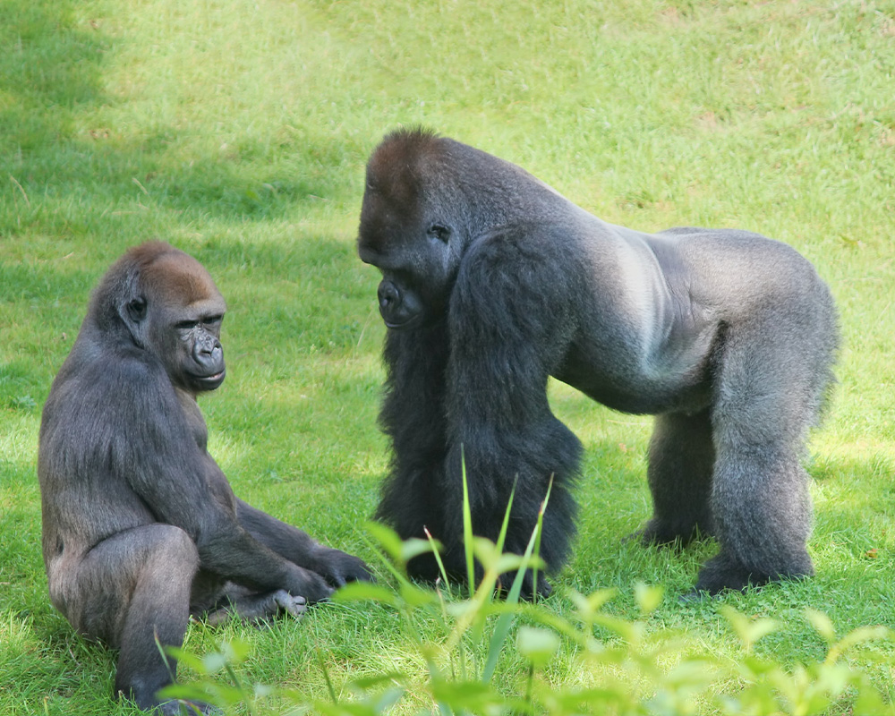
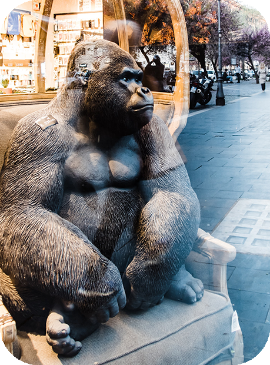
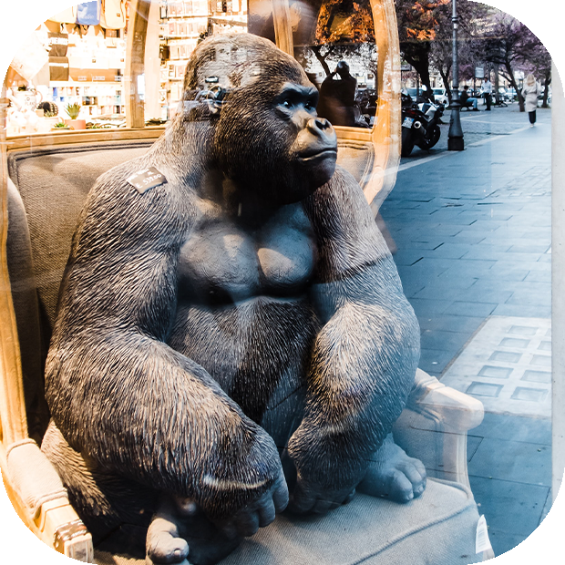

Gorink barとは…？
店主のゴリラ愛で出来ているお店についてご紹介します。
obsession
Gorinkbarのホームページをご覧いただきありがとうございます！
当店はゴリラが大好きな店主による有り余るゴリラ愛をぶつけて作り上げたテイクアウト専門のドリンクスタンドです。
一般的に力強いイメージのゴリラですが、彼らは平和主義者でとっても繊細な動物です。
ストレスのあまりおなかを壊してしまうことも多々あるとか…
そんな優しいゴリラにリスペクトした当店の商品はお腹に優しい自然由来のドリンクです。
素材のこだわりとゴリラの愛がこもった当店のドリンクをぜひ一度ご賞味ください。
photospot


芸大出身の店主お手製のゴリラの彫刻は
当店人気のフォトスポット♪
来店の記念にぜひ仲良しな写真を撮ってくださいね！